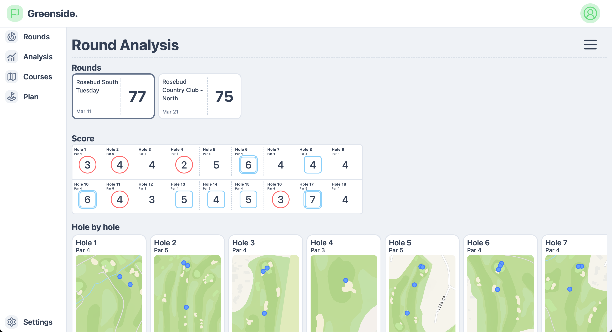
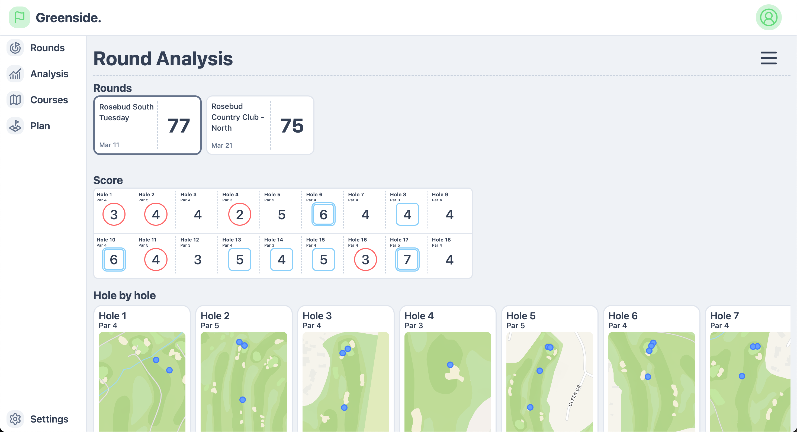

My name's Oskar and welcome to my little site where I will be publishing projects I'll be working on
throughout the remainder of my degree and beyond.
I'll be using this site as a canvas to showcase my
exploration and to experiment with new things I'm learning.
A lot of my projects will be focused on the
application to my hobbies. I'm very interested in how I can combine the tech side of my life with my hobbies to
improve and discover more about them as well as help others do the same.
On this page, I'll be posting my most recent project(s) below and any other things I think are worthwhile showing here!
My main project which currently includes an iOS app, a watchOS app and soon to include a web application as well.
These will hopefully be on the app store soon once I touch them up!
 


09/2024